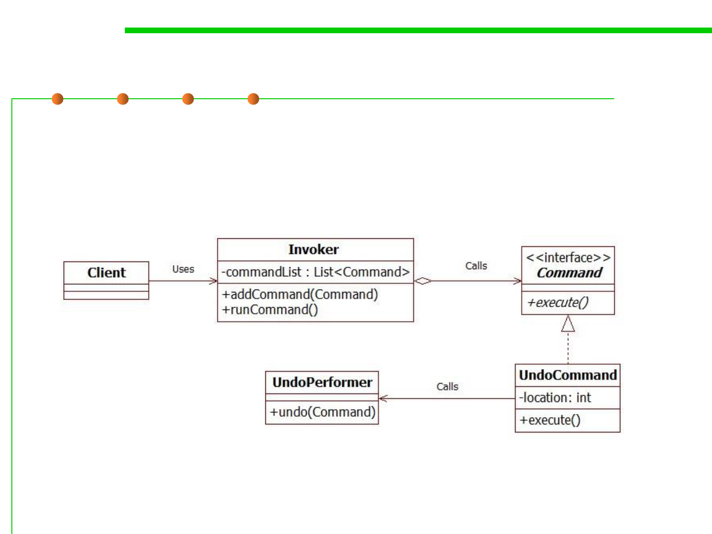

Example
6.2 Design Patterns for Maintainability
▪
In our example we need to store some undo actions when the user is
using the application, and when the user decides to perform the undo
we can just use the invoker to run the commands.